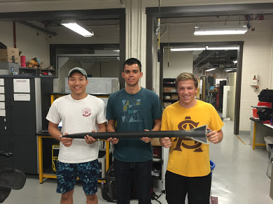
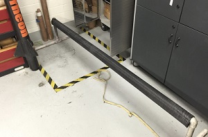
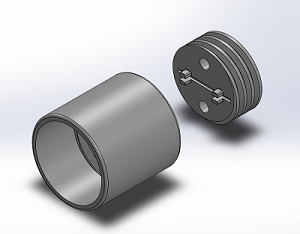
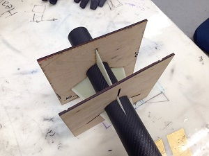

Projects
Fin Flutter Research Project
Fulton Undergraduate Research Initiative (FURI)
 This project started with a conversation of trying to determine what properties of a rocket’s fin would affect flutter the most, after stumbling across an article about flutter. I spoke with some of my peers in Daedalus Astronautics and decided that this would be a very interesting research project. I applied to receive funding from the Fulton Undergraduate Research Initiative (FURI) under the mentorship of Daniel White and was accepted for the semesters of Fall 2016 and Spring 2017.
This project started with a conversation of trying to determine what properties of a rocket’s fin would affect flutter the most, after stumbling across an article about flutter. I spoke with some of my peers in Daedalus Astronautics and decided that this would be a very interesting research project. I applied to receive funding from the Fulton Undergraduate Research Initiative (FURI) under the mentorship of Daniel White and was accepted for the semesters of Fall 2016 and Spring 2017.
Originally, I wanted the project to focus on how varying materials can affect flutter, but the only material property affecting flutter is the fin’s Shear Modulus, which could be found after a few minutes of searching on Google. So, I decided the project would be focused on measuring how various fin geometries affect flutter. The total area would remain the same, while values such as tip chord or semi-span length change. I came up with a design of the sounding rocket which would allow for me to change the fins the rocket was flying with. Almost all high-powered rockets have a motor mount connected to the body tube by three centering rings. These centering rings are epoxied on both sides for structural purposes and connect the two. The fins are usually connected to the motor mount in between the second and third centering rings. My design consists of using a fin can which would not epoxy to the motor mount, but would be able to slide on and off. Also, the third centering ring would not be epoxied, but would be connected by all-thread travelling through the centering rings with nuts fastened on each end. The third centering ring could then be removed for me to test various fin can designs. The electronics would consist of a microcontroller mounted at the top of the motor mount tube with wires going to a flex sensor embedded in each fin. The flex sensor measures frequency of the fin’s oscillations.
While planning this project, I began to realize how expensive motors would be to launch as many times as my mentor and I thought would be enough. It just so happened that the Daedalus Solid Propellant team was deciding which projects they would focus on for the year at that time. At the start of the Fall 2016 semester, I was being groomed to  take over as team lead for Solids in 2017. So, we decided as a group that the team would take on developing motors for my project as one of the projects to complete that school year. This became the focus of my research project for the school year. The intention was to develop flight-capable motors which would then fly on my sounding rocket.
take over as team lead for Solids in 2017. So, we decided as a group that the team would take on developing motors for my project as one of the projects to complete that school year. This became the focus of my research project for the school year. The intention was to develop flight-capable motors which would then fly on my sounding rocket.
For the whole school year we focused on developing the motor. We spent time strand burning, mixing propellant, and preparing for full-scale test firing. We spent many months renovating our strand burner in order for it to become running at full capacity. We machined new motor casings for our 29mm small-scale test motors, and we perfected our mixing method of propellant. Working with these propellants is extremely dangerous, so I had to manage 5+ members and ensure that we were always working in a safe environment and that everything was going smoothly. No one in the club had flown their own experimental motor, so I was working in new territory and wanted to make sure I was doing everything correctly and safely. It was a very ambitious project, so we were not able to develop a flight capable motor by the end of Spring. However, the project is planned to resume at the start of the Fall 2017 semester, as we made excellent progress towards completing it.
Daedalus AstronauticsCURT Maximum Altitude Rocket
Daedalus Astronautics was invited in August 2015 to attend CURT, or Central US Rocketry Tournament. The competition was to be held in Argonia, Kansas in April 2016. The competition consisted of three components: A budget competition, a heavy lift competition, and a maximum altitude competition. Daedalus decided to split the club up into teams that would each tackle one aspect of the competition. I joined the maximum altitude team, which we began to call Max Alt. The Max Alt team consisted of Brian Chang, Chris Wellons, Evan Phillips, Stephen Hall, and myself.
The project parameters for the Max Alt competition were simple: The rocket needed a commercial motor and commercial nosecone. Everything else needed to be scratch-built.
Our team worked well together. We immediately established a “roundtable” type environment, where there was never just one team member coming up with design ideas. Someone would come up with an idea, and immediately two to three other people would add a significant improvement to it. The first aspect of the rocket we considered was what type of motor we were going to select. The motor size options were either a J or K, and while a K motor would go significantly higher than a J, the scoring factor had a 1.5 multiplier for any altitude a J motor achieved. Our team ended up deciding to make a minimum diameter rocket flying a Cesaroni K300 motor (minimum diameter meaning that the rocket would have no motor mount and the motor would be held in by the body tube itself). Our initial reaction was to use the biggest and fastest motor available, which made sense to us at the time. However, after further review, we came across the equation describing the force of drag on the rocket, which states that the drag force is directly proportional to the square of velocity. Simply put, the faster the rocket goes, the more drag force the rocket endures. A high drag force is not ideal when trying to achieve a high altitude. The motor we wanted would bring the rocket to a high speed quickly, but it would burn out fast and the drag force would cause the rocket to decelerate rapidly. Thus, we decided to use a “moon burner”, which is a description of the propellant’s geometry. This geometry causes the propellant to have a much longer burn than a motor of the same size. This motor caused the rocket to travel at a lower speed but applied thrust for a much longer time. Our first motor burned for about 1.3 seconds while the final motor we chose burned for 11.4.
We chose to use a Carbon Fiber body tube. Carbon fiber is extremely strong and light, which is excellent for what we needed. We wrapped the body tube ourselves with sheets of carbon fiber and epoxy. For the fins we chose G10 fiberglass, the biggest reason being that another group in Daedalus had excess G10, so the fin decision was cost-based. We wanted the rocket to be as short as possible, as any increase in length of the rocket would increase drag. Our simulations were indicating that this rocket was going to reach an extremely high altitude; the highest estimate was 30,000 feet. The rocket was pretty simple due to its objective: It needed to be mostly a motor with electronics and a drogue and main parachute. However, we wanted to find a way to reduce the amount of space that both the parachutes and the electronics were taking up, because length meant everything. After researching rocketry forums and speaking with people more experienced than us, we found out about the “cable cutter” method. Typically, a rocket has a drogue and main parachute. A drogue parachute creates drag to slow down the rocket but not enough to cause it to drift far away. The main then pops at usually about 1,000 feet and decelerates the rocket enough to cause it to land smoothly. The Max Alt rocket could have easily just had a main chute and it would have floated safely to the ground. However, with the speed it would be travelling and the size of the main chute, it is quite possible that it could drift upwards of 15 miles away from the landing location, causing the team to be unable to find it. The cable cutter method turned the main parachute into a drogue parachute as well. The way it works is by a tiny canister filled with a small amount of black powder and an e-match. The main chute pops at apogee, but it is zip tied tight. The canister surrounds part of the zip tie and contains a piston. The e-match is lit by the electronics at apogee, which ignites the black powder and drives the piston to the other side of the canister, breaking the zip tie. This then allows the main parachute to open. This was tested on one of our team member’s certification attempt and it was successful.
For our rocket's electronics, we needed them to take up as little space as possible and ideally not increase the length of the rocket. Another problem was that carbon fiber interferes with signal transmission, and our electronics were going to be transmitting telemetry data to our laptop. Our solution for this was to use a fiberglass nosecone and house the electronics inside that. In order to access the electronics easily, but also ensure that they stayed secure during flight, we 3D printed a threaded electronics bay that could thread in and out of the bottom of the nose cone quite easily, making our electronics easy to access and not add any more length to the diameter.
The fins were quite difficult, but ended up being one of the rocket's best features. Because the rocket was minimum diameter, the fins have to mount directly on the body tube, which is not a lot of material to bond to. So, we epoxied the fins to the body tube, but we also added carbon fiber layups to the outsides of the fins from the top of the fins to the body tube, in order to increase the bonded surface area. We wanted the rocket to be as aerodynamic as possible, so we decided to add airfoils to the fins. We researched and from what it seemed, the best airfoil design was a Clipped Delta design. This was because, while our rocket changed speed quite a bit, the majority was going to be spent in the transsonic region, and the clipped delta design was the most aerodynamic in the transsonic region. We used a mill to add the airfoils perfectly in order to have symmetry. At the end, the fins were as sharp as a knife and we had to use gloves when handling them. Some other features of the rocket were its flyaway rail lugs, which meant that the rail lugs used for launch were fastened to the rocket in tension, and when off the pad the lugs would open and fall off of the rocket, reducing drag. We also added a boat tail aft enclosure to reduce wake drag on the rocket.
Our first test flight took place one month before the competition was set. The rocket failed catastrophically about 200 feet off the pad. There was some sort of significant failure which caused the motor casing to burst open in the forward section, shooting hot gas and shrapnel throughout the rest of the rocket from the top of the casing to the tip of the nose cone. The shrapnel destroyed the forward retainer, ripped the parachute to shreds, and demolished the very expensive elect ronics housed in our nose cone. The body tube was shredded at various sections and the whole collection came tumbling from the sky west of the pad. Everything went about as wrong as it possibly could have. The damage was so extensive that we were not only unable to rebuild on time, but we could not afford to rebuild. With all of that being said, I look back on that crash fondly and appreciate it very much. While it was a devastating blow to morale, I think it was very good for the team and helped us grow as engineers. Had everything gone perfectly, we would have continued on to the competition and perhaps even placed or won. In our mind, we would have built the perfect rocket. However, the explosion caused us to look inward and examine every design decision to see what we could have done better. After our analysis, we determined that the error came either from the motor manufacturer or the way we mounted the forward retaining ring. If the error came from the motor’s manufacturing (rocket motors tend to fail occasionally), there is nothing we could have done to change that. However, what I think was important is the fact that we were forced to really think over everything we may or may not have done right and talk about all of it. Perhaps of utmost importance, it taught us humility, and that we can always improve as engineers and designers.
ronics housed in our nose cone. The body tube was shredded at various sections and the whole collection came tumbling from the sky west of the pad. Everything went about as wrong as it possibly could have. The damage was so extensive that we were not only unable to rebuild on time, but we could not afford to rebuild. With all of that being said, I look back on that crash fondly and appreciate it very much. While it was a devastating blow to morale, I think it was very good for the team and helped us grow as engineers. Had everything gone perfectly, we would have continued on to the competition and perhaps even placed or won. In our mind, we would have built the perfect rocket. However, the explosion caused us to look inward and examine every design decision to see what we could have done better. After our analysis, we determined that the error came either from the motor manufacturer or the way we mounted the forward retaining ring. If the error came from the motor’s manufacturing (rocket motors tend to fail occasionally), there is nothing we could have done to change that. However, what I think was important is the fact that we were forced to really think over everything we may or may not have done right and talk about all of it. Perhaps of utmost importance, it taught us humility, and that we can always improve as engineers and designers.
Tripoli Certification Launches
Personal
Tripoli Rocketry Association, Inc. is an organization that exists to help amateur rocketry enthusiasts build and lunch in a safe and legal manner. The Tripoli Phoenix Group puts on launches once a month North West of Metropolitan Phoenix. Tripoli gives out certifications to members which qualifies them to launch certain sized motors and eventually experimental motors. Motors are typically classified by their impulse ranges, with each range having a character of the alphabet assigned to it.
 When I was a freshman at ASU and had spent a semester in Daedalus Astronautics, I wanted to attempt to get my Tripoli Level 1 flight certification. I decided to use a dual deploy rocket, which is something much more commonly used on advanced high-power rockets. Dual deploy refers to when a rocket has two parachutes, a drogue and main, which are deployed by electronics containing either a barometric sensor or an accelerometer. I used the book “Modern High Power Rocketry 2” as a reference and guide. The first step of the project was to design it in a software called RockSim 9. RockSim is a simulation and design software that helps a person figure out if their rocket is flight capable and achieves the desired results before they invest the time and money required to build a rocket.
When I was a freshman at ASU and had spent a semester in Daedalus Astronautics, I wanted to attempt to get my Tripoli Level 1 flight certification. I decided to use a dual deploy rocket, which is something much more commonly used on advanced high-power rockets. Dual deploy refers to when a rocket has two parachutes, a drogue and main, which are deployed by electronics containing either a barometric sensor or an accelerometer. I used the book “Modern High Power Rocketry 2” as a reference and guide. The first step of the project was to design it in a software called RockSim 9. RockSim is a simulation and design software that helps a person figure out if their rocket is flight capable and achieves the desired results before they invest the time and money required to build a rocket. I designed the rocket based on body tubes and materials that my club already had available in our surplus section. I decided to use an Aerotech I600 motor. The body tube was phenolic and I wrapped it in fiberglass and coated the fiberglass in epoxy to reinforce the phenolic structurally. The fins were made of G10 fiberglass with a fiberglass nosecone. This rocket gave me a lot more experience with building and testing. In May of 2015, I attempted to launch this rocket, and it was unsuccessful. While I was not able to determine the cause fully, I either incorrectly programmed the electronics or the barometric sensor was working incorrectly, causing the ejection charges to go off early and shred the body tube. This was a tough blow for me, experiencing building something for months on end and watching it be destroyed in less than a second, but I am thankful for the experience that it gave me and it helped me be very prepared for my second L1 attempt. I learned quite a bit from the experience and it helped lead to an excellent second rocket.
I designed the rocket based on body tubes and materials that my club already had available in our surplus section. I decided to use an Aerotech I600 motor. The body tube was phenolic and I wrapped it in fiberglass and coated the fiberglass in epoxy to reinforce the phenolic structurally. The fins were made of G10 fiberglass with a fiberglass nosecone. This rocket gave me a lot more experience with building and testing. In May of 2015, I attempted to launch this rocket, and it was unsuccessful. While I was not able to determine the cause fully, I either incorrectly programmed the electronics or the barometric sensor was working incorrectly, causing the ejection charges to go off early and shred the body tube. This was a tough blow for me, experiencing building something for months on end and watching it be destroyed in less than a second, but I am thankful for the experience that it gave me and it helped me be very prepared for my second L1 attempt. I learned quite a bit from the experience and it helped lead to an excellent second rocket.
My second attempt at my level 1 certification went much more smoothly. The rocket was a modified kit that I found online. I laser cut the centering rings from acrylic, and 3D printed my electronics bay. It also used the dual deploy method, and I flew a Cesaroni I motor. The flight went very smoothly, and I was able to receive my Tripoli Level 1 certification.
Drag race team lead
Daedalus Astronautics
 Daedalus Astronautics has a program where freshman who have just joined the club are put on a "drag team." The program involves two teams of freshman competing against one another to develop a high powered rocket. The parameters are that the team must use an identical motor, body tube diameter, and nose cone. Each team launches, and the team whose electronics indicate they reached an altitude of 3,000ft first wins. The program is designed to get freshman excited about rocketry and to teach them relevant concepts. I led a group of four freshman (two were unable to attend the launch pictured) and helped them develop the rocket. This was my first experience managing an engineering project. I did barely any of the actual work by hand, as the program is intened for freshman to build their own rocket, so I had to learn how to effectively communicate and teach the students what they needed to know. Each week I taught a lesson on fundamental concepts of rocketry and rocket design. I led builds and taught the team how to use tools and equipment necessary for building. I organized a tour of the ASU machine shop and ASU 3D printing lab. I taught the members how to use SolidWorks, and they designed centering rings to 3D print as well as an electronics bay to laser cut. The project was a lot of fun for everyone involved. The team learned a lot and so did I.
Daedalus Astronautics has a program where freshman who have just joined the club are put on a "drag team." The program involves two teams of freshman competing against one another to develop a high powered rocket. The parameters are that the team must use an identical motor, body tube diameter, and nose cone. Each team launches, and the team whose electronics indicate they reached an altitude of 3,000ft first wins. The program is designed to get freshman excited about rocketry and to teach them relevant concepts. I led a group of four freshman (two were unable to attend the launch pictured) and helped them develop the rocket. This was my first experience managing an engineering project. I did barely any of the actual work by hand, as the program is intened for freshman to build their own rocket, so I had to learn how to effectively communicate and teach the students what they needed to know. Each week I taught a lesson on fundamental concepts of rocketry and rocket design. I led builds and taught the team how to use tools and equipment necessary for building. I organized a tour of the ASU machine shop and ASU 3D printing lab. I taught the members how to use SolidWorks, and they designed centering rings to 3D print as well as an electronics bay to laser cut. The project was a lot of fun for everyone involved. The team learned a lot and so did I.
Hybrid Rocket Engine Rebuild
Daedalus Astronautics
 During my first year in Daedalus Astronautics, I expressed a lot of interest in solid modelling and machining. The president at the time decided that I would be the right person to rebuild the small-scale hybrid rocket test engine that the club had. The one they had at the time had been fired over 50 times and needed to be retired. I was assigned to rebuild the test engine. I spent many hours teaching myself how to use SolidWorks on YouTube,
During my first year in Daedalus Astronautics, I expressed a lot of interest in solid modelling and machining. The president at the time decided that I would be the right person to rebuild the small-scale hybrid rocket test engine that the club had. The one they had at the time had been fired over 50 times and needed to be retired. I was assigned to rebuild the test engine. I spent many hours teaching myself how to use SolidWorks on YouTube, learning how O-rings and their corresponding grooves work, and learning from ASU's machine shop how to use a mill and lathe. It took me about six months to complete the project, but by the end I was extremely comfortable using almost all machining exquipment. I was able to learn G-code, a bit of welding, and using bandsaws. We tested the whole system at the end of the semester and everything I built worked! The video of the first test fire can be seen about 20 seconds into the video I have playing on the home page. Note: If you're reading this far, I assume you can see in the video that it is a pretty ugly burn. That was the only video I was able to safely collect with the camera setup, and we were having issues with our oxidizer flow, so I'm sorry!
learning how O-rings and their corresponding grooves work, and learning from ASU's machine shop how to use a mill and lathe. It took me about six months to complete the project, but by the end I was extremely comfortable using almost all machining exquipment. I was able to learn G-code, a bit of welding, and using bandsaws. We tested the whole system at the end of the semester and everything I built worked! The video of the first test fire can be seen about 20 seconds into the video I have playing on the home page. Note: If you're reading this far, I assume you can see in the video that it is a pretty ugly burn. That was the only video I was able to safely collect with the camera setup, and we were having issues with our oxidizer flow, so I'm sorry!
thomaschester.space
Personal
 I wanted a better way than just a resume or LinkedIn to showcase my projects and experiences, so I decided to create a website. I was told by a friend about HTML5 UP, which offers free HTML5 templates. I saw that as not only a cheap option, but a great reason to learn how to program in HTML and CSS. It was a very educational experience and I am very proud of the site. I now truly appreciate how much work a good website takes!
I wanted a better way than just a resume or LinkedIn to showcase my projects and experiences, so I decided to create a website. I was told by a friend about HTML5 UP, which offers free HTML5 templates. I saw that as not only a cheap option, but a great reason to learn how to program in HTML and CSS. It was a very educational experience and I am very proud of the site. I now truly appreciate how much work a good website takes!